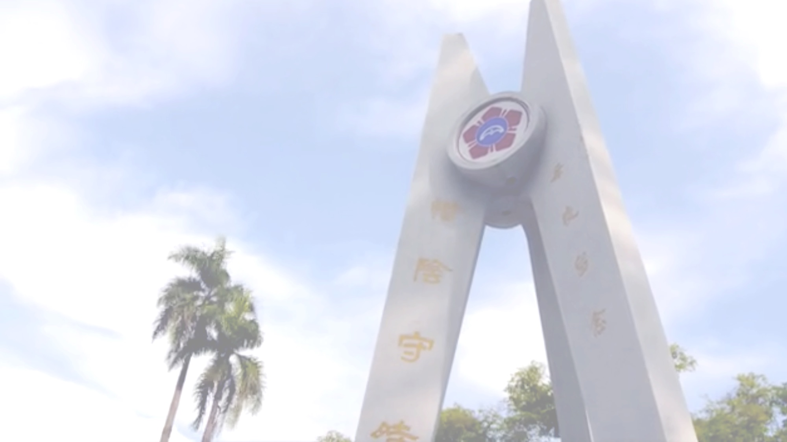
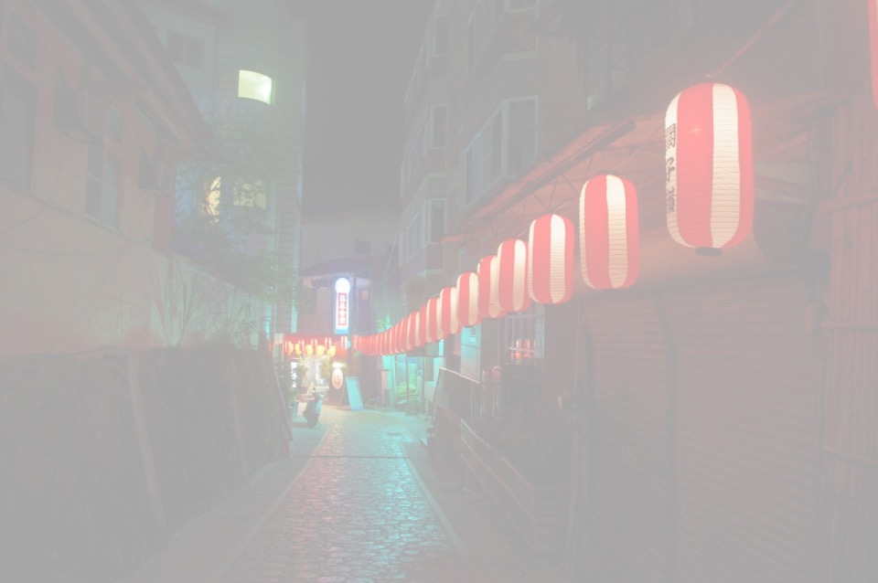
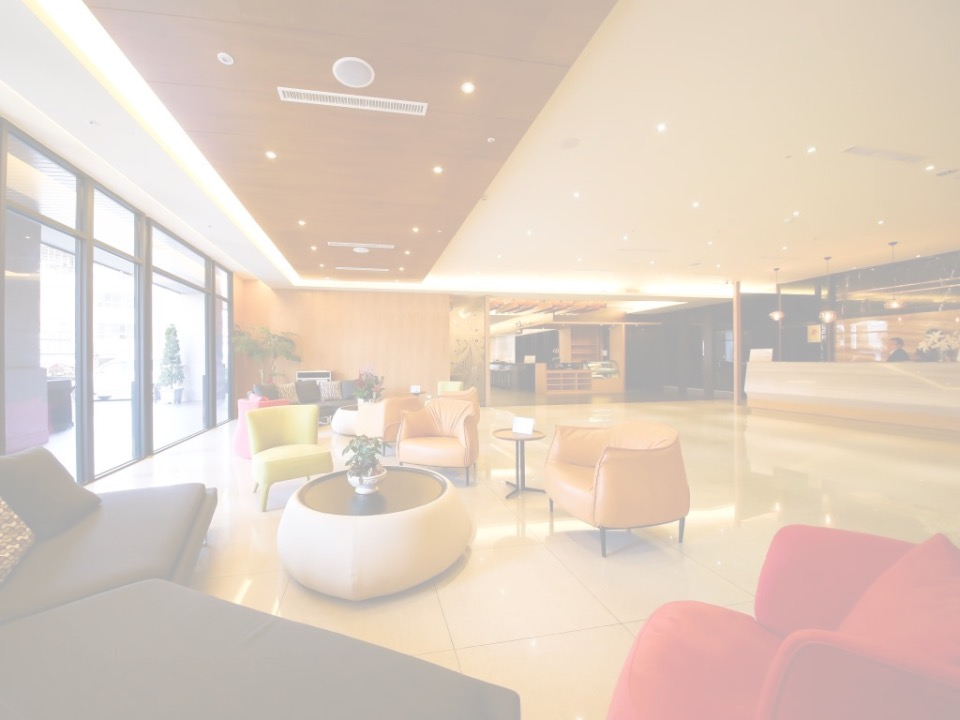

生活資訊
Logistics
Height of NCKU
看見成大，卓越領航。立足台灣，前進世界。
 天高樹高、地富人強；登高望高、願大力遠。高度承載歷史的脈流，高度支持廣域的包容；高度延伸視野、高度想見未來；高度是自今而後深遠的期待，高度是努力於當下的真實耕耘；八十五歲的成功大學在台南府城的沃土上落地生根、陽光照拂、雨露滋養，因而成為代代滋養人才、發光發熱的優質高等學府！
南。以傾聽
府城的一磚一瓦是台灣歷史發展的見證者，而臺南這座城市的生命力源自巷弄。
百年來，它並不只是一座適合做夢、幹活、戀愛、結婚、悠然過日子的城市。北迴歸線以南的時間緩慢流轉，直到那些我們所認為美好的微小事物都遺留在生活片段中。
西拉雅與鹿、黑面琵鷺與曾文溪、湯德章與民主，臺南城市的基調是血液裡的自信，一如食物裡不收斂的甜。
來吧，勇敢的臺灣人。聽孕育臺灣的母親城呢喃。
Social Event
南柯一夢

海安路藝術街與相伴的神農街、國華街匯集了年輕紛飛的美學以及古早飄香的美食，海安路身為台南最熱鬧的徒步藝術區，PUB、燒烤沿街林立，隨意挑選一攤坐下來，身旁會是談笑不盡的朋友與璀璨的燈光；一旦踏入神農街，住家的寧靜氣息會讓人瞬間以為時光停滯；最後，如果你也為台南美食慕名而來，國華街琳瑯滿目的魚湯肉飯，請務必放縱自己一回多嚐幾道。
身為台灣人的你對夜市想必不陌生，但你又是否聽過台南獨有的俏皮口訣「大大武花大武花」，掐指一算、今日盛開的便是武聖夜市，武聖夜市占地並不大，卻是這座老城裡最老的夜市，散布著許多古早好味道的小攤，也不乏新興的口味留香，窯烤物與海鮮備受寵愛，不妨尋覓間停下腳步試試看，寫下一篇親身走過的台南美食經。
藍晒圖文創園區盛著滿滿的彩色顏料，藝術家將無數巧思融化進斑駁的日式宿舍群中，漫遊小店與建築其中你將驚喜不斷，吉祥物BLUES藍藍大大的身軀帶著電子式的笑臉還會不時與你撞見；一旁的新光三越台南`新天地聽來摩登，親走一遭你才會發現小西門這個古老的象徵、與持續找不完的文創彩繪，彷彿銀紫色的蝴蝶停在夜裡的城上。
Sing Me to Sleep
富朗飯店
 座落於府城古蹟文化園區，緊臨台南火車站與中山、民族百貨精品商圈，並鄰近花園、武聖等著名觀光夜市。特聘知名設計團隊規劃，打造巴洛克式的建築風格，全館採用知名舒適床墊、高級羽絨被、羽絨枕。客房備有42吋高畫質液晶電視，並提供腳踏車租借服務及自助洗衣、烘衣機，提供便捷舒適的商旅需求。
客房設備
- 咖啡包、茶包
- 快煮壺
- 無聲冰箱
- 保險箱
- 42吋液晶電視
- 免費無線上網
- 吹風機
- 乾濕分離淋浴間